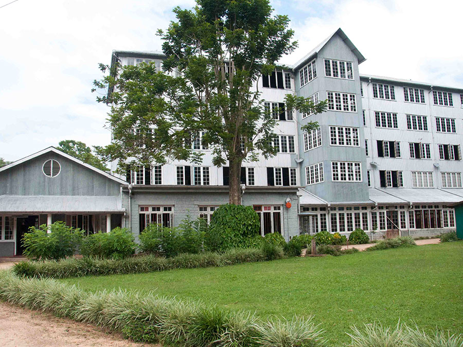
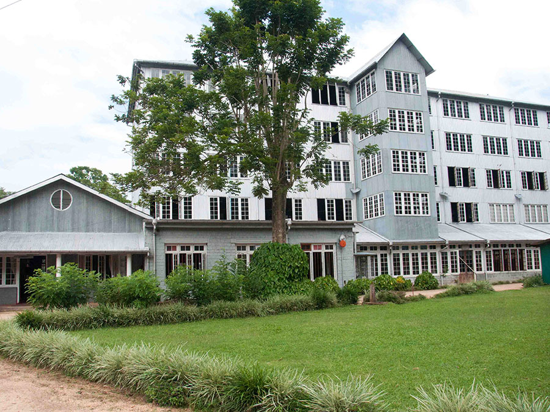

The Ceylon Tea Museum is located in the former Hanthana Tea Factory, which was originally constructed in 1925. It is situated 3 km (1.9 mi) south of Kandy.
Ceylon Tea Museum
Read More
The Ceylon Tea Museum is located in the former Hanthana Tea Factory, which was originally constructed in 1925. It is situated 3 km (1.9 mi) south of Kandy.
Hanthana was one of the first successful areas to cultivate tea following the failure of coffee production on the island. In 1959 the Tea Research Institute of Ceylon established a sub station on land leased from the Hanthana Estate, to cater the needs of mud-country tea plantations.
Before it was renovated in 2001 by the Sri Lanka Tea Board and the Planters' Association of Sri Lanka, the four-story tea factory had lain empty for over a decade. On 9th January, 1988, the Ceylon Tea Museum was incorporated in a move initiated by the Chairman of the Sri Lanka Tea Board, Clifford Ratwatte. The museum formally opened on December 1st, 2001.
 
